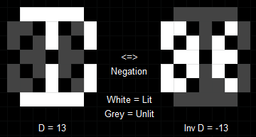

On the subject of 14
Stores + RGB = Fun!
This module consists of a large 14-segment display, eight triangular buttons, an LED, and a three digit counter.
The display will initially show a pattern of the colours:
Black, Red, Green, Blue, Cyan, Magenta, Yellow, and White.
This pattern is the result of additively mixing the Red, Green, and Blue colour channels of the display.
Each of these channels shows a base 36 digit.
These digits can either be shown normally or inverted, where the segments that are normally on are switched off and vice-versa.
The 14 segment representation of base-36 characters can be found in Appendix A.
Negative values are represented by negating the activated segments for a character.
Note: 0 will always be positive, and therefore will never be negated.
Example:
When a module is solved, the counter will increase and the display will change, showing a new pattern of base 36 digits.